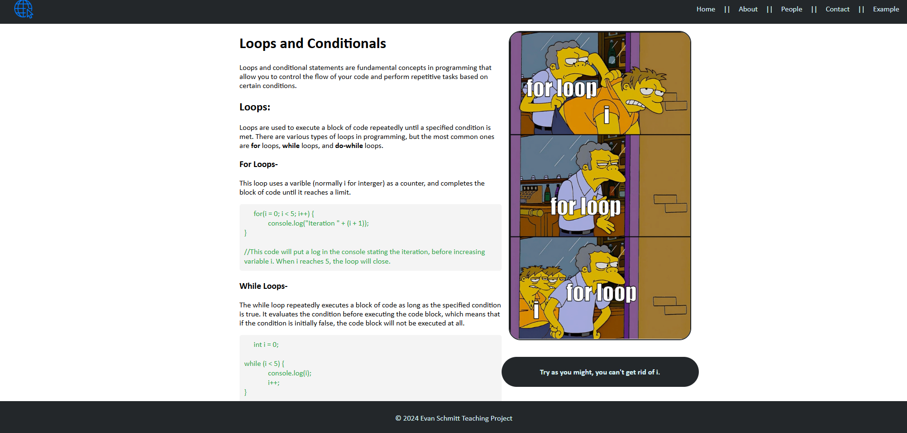

For my Examining Self As Teacher class, we were tasked with creating a lesson to teach a concept of our choice. I chose to create a site that teaches the concept of recursion, or looping, in JavaScript.
As a part of my honors contract, I created a website for this lesson, and presented it to my class.
This project was a great opportunity for me to apply my JavaScript skills in a practical way and to create something that could be useful for others learning the language.
